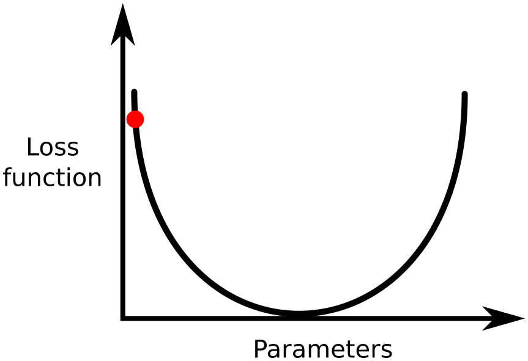
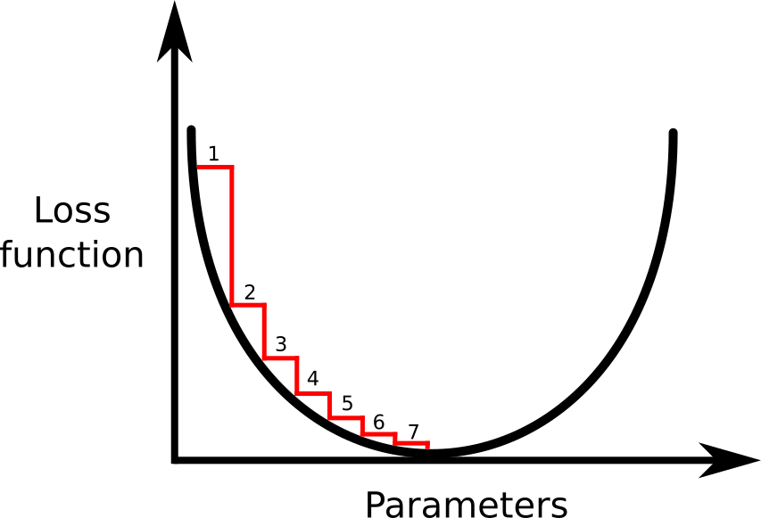
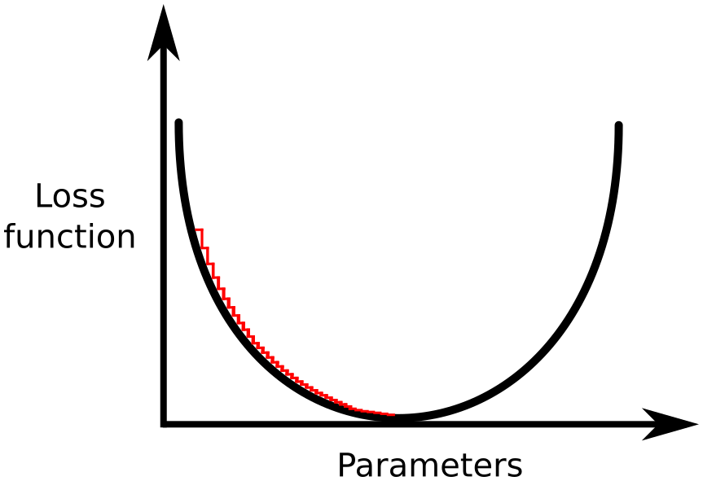
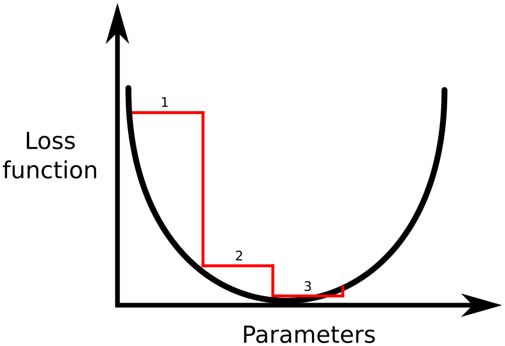
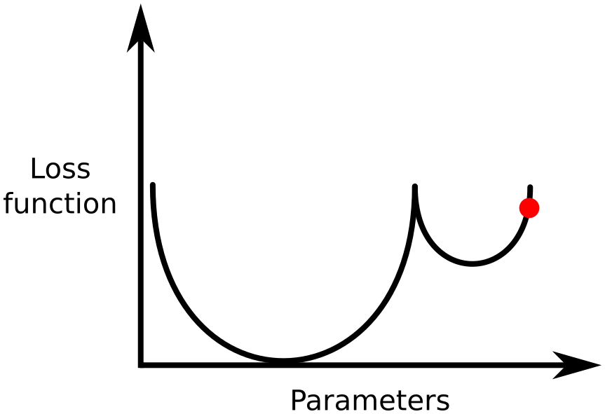

G is for Gradient Descent
As I’ve said many times before AI/machine learning/deep learning is not magic. In the case of supervised learning models (including [deep learning]((../2020-04-08-d-is-for-deep-learning/index.qmd) you have four things:
- Labelled data
- Features (e.g. image pixels or text)
- A weight for each feature (since some features are more important than others)
- An objective (or cost) function which measures how well/poorly your predictions match the labels.
Before we start training a model, we have our data set and choose the features we want to use, as well as an objective function. I’ve mentioned some common objective functions in previous blog posts including cross-entropy loss and root mean squared error (RMSE). An objective function is a function of both the features as well as the weights. Once we’ve chosen the features and objective function, they are fixed while we actually train the model. This means the only thing we can change is the weight of each feature. When we refer to training a model, what we typically mean is finding which values of weights minimize or maximize the objective function. How do we actually find this set of weights? You can imagine trying a bunch of different sets of weights and seeing which gives the best model performance. However, as you might expect there are better ways to find the best set of weights. The broad category of algorithms that find the minimum/maximum values of functions are called optimization methods.
Gradient descent
Gradient descent (and related variants) is a popular optimization technique and it is widely used in a variety of applications, including basically all deep learning models. It is an iterative method, which means it keeps repeating the same steps until some criteria is reached. This stopping criteria is also referred to as convergence criteria. This stopping condition could be “stop when the value of the loss function doesn’t change from step to step”. Let’s imagine we have a simple loss function like the one shown below and our starting position is shown in red. This starting position is typically random, since our weights are randomly initialized. We want to figure out how to get to the bottom of this bowl shaped curve, since this is the set of parameters where our loss function is at the smallest value. As we iterate through this process, we are “learning” better sets of parameters (or weights).

Imagine that you are on a hill at this red dot, and need to get to the bottom of the valley. However, you are also blindfolded (which sounds like the world’s worst escape room) so you can’t see where the valley is. You also want to get to the bottom of the hill as quickly as possible, so you want to take as few steps as possible. How would you do this? You would probably try to find the direction where the hill is the steepest and take a step in that direction. You would keep repeating this process until you got to the bottom of the hill. This is exactly what gradient descent is doing. We can calculate the direction with the steepest slope by calculating the derivative (or gradient) of the loss function. We then take a step in that direction, then keep repeating the process until we reach some stopping criteria.
The key parameter in gradient descent is called the step size or learning rate which says how far to step in the direction of the gradient. It is really important to choose this value correctly. If we choose an appropriate value (like the one shown below) we can take a reasonable number of steps (in this case 7) to get to the bottom of the hill.

However, if we make the learning rate too small, then we need to take a lot of steps and this means that it takes much longer to get to the bottom of the hill.

If we make it larger, then we can take fewer steps. But this also runs the risk of overshooting the minimum and even risks not converging at all.

One way around this problem of having to choose the best learning rate is called “learning rate annealing”. Basically, it means that we start with a large learning rate (so we can quickly take large steps in the right direction). As we continue, we start taking smaller and smaller steps, so that we don’t overshoot the minimum. This has a nice balance between the large and small step sizes which makes choosing an initial learning rate less tricky.
Local vs global minima
Up until now, we have been talking about a very simple loss function which only has one minimum. In practice, loss functions are very messy and have many hills and valleys. Each valley has a local minima and there is one true global minimum which is actually the lowest point. In the loss function shown below, there are two minima. If we start at the red dot and use the method described above, we will get stuck in the valley on the right (a local minimum). However, we would like to get to the bottom of the valley on the left.

One technique for doing this is called gradient descent with restarts. In this technique, you periodically make your learning rate very large (and then slowly make it smaller using annealing). The benefit of this technique is that the large learning rates will help you escape the local minima, and hopefully find the global minimum (or at least a good minimum).
Gradient descent in practice
In practice, there are other modifications people apply to gradient descent in order to make it faster/easier to compute.
- The form of gradient descent described above is known as “batch gradient descent”. This means that the entire dataset is used to compute the gradients. For large datasets this is impractical since the entire dataset needs to fit in memory. In many applications, especially deep learning, stochastic gradient descent (SGD) is used. Instead of using the entire dataset to calculate the gradient, random subsets are used (called mini-batches). While this is slightly less accurate, it is much faster and more efficient.
- Momentum is a popular addition to SGD since it makes it faster to compute, and typically gives more accurate results. Here you update the weights using the gradient, but you also use a weighted average of the previous gradients. In our example about finding your way down the hill, you would not stop and try to figure out the exact best slope down the hill for each step. You would continue in roughly the same direction and make minor direction changes as needed. Momentum does a similar thing by including the history of gradients in order to speed things up.
Summary
Gradient descent is a technique used in a wide variety of applications. In particular, it is the workhorse of deep learning, and is what is used when a model “learns” weights. It is a fairly simple idea at its core, and hopefully this gave you an intuition for how it works, as well as some techniques that are used in practice.